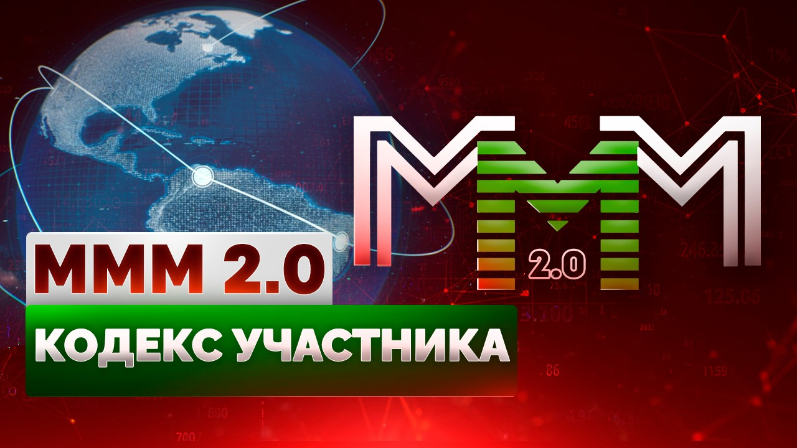

Регистрация в телеграм-боте
По ссылке можете прочесть Идеологию МММ

Собственно, весь Кодекс состоит всего из двух пунктов:
1. Все люди – хорошие. Честные и добрые.
2. Людям надо верить. Не бойтесь быть обманутыми, бойтесь обмануть сами. В первом случае вы потеряете всего лишь деньги, а во втором – самого себя.
Краеугольный камень, фундамент, на котором зиждется возрожденная МММ, Наша Система Взаимопомощи имени Сергея Мавроди: все люди – хорошие. Честные и добрые. И им надо верить.
Базовая посылка же, на которой выстроено всё современное общество, – прямо противоположная: все люди – плохие! Злые и бесчестные. И верить им нельзя. Именно поэтому – формальные договорные отношения как основа основ современного общества. (Потому возрождённая МММ зовётся ещё и АНТИСИСТЕМОЙ)
Вы никогда не задумывались над тем, что такое договор и зачем он вообще нужен? Что, заключая с партнёром формальный договор, ты, по сути, расписываешься в том, что оба вы – лгуны и мошенники, готовые обмануть друг друга при первом же удобном случае? Что просто честному слову вашему – грош цена. И только страх наказания может хоть как-то удержать вас обоих от взаимного обмана. Отсюда – все эти бесчисленные пункты и параграфы в договоре. Желание всё предусмотреть, застраховаться от любых подвохов и не дать себя обмануть своему бесчестному мошеннику-партнёру. Но если ты не веришь человеку, то с какой стати он будет верить тебе? Никто никому и не верит, как итог. Договор это – человек человеку волк.
Между тем ещё Христос две тысячи лет назад сказал в Нагорной проповеди: «Но да будет слово ваше: да, да; нет, нет; а что сверх этого, то от лукавого» (Матф. 5:33-37). И это правильно. Поскольку любое «сверх этого» это уже признание, что ты лжец, чести у тебя никакой нет, и просто «честное» слово твоё ничего не стоит и ничего не значит.
Возрождённая МММ – единственная часть современного общества, где между людьми нет абсолютно никаких формальных отношений. Где людям просто – верят. Как в одной большой семье. Это кажется полнейшей утопией (верят?! в современном-то мире??!!), но это, однако, никакая вовсе не утопия. И сам факт возрождения МММ – лучшее тому подтверждение. Люди истосковались по нормальным человеческим отношениям! Им неуютно в современном мире, жестоком и безжалостном.
Просто нам с детства вбивают в голову, что люди злы, и верить им нельзя. А на самом деле люди добры, и верить им – можно! Нужно!! Вот вы всю свою жизнь никому не верили, всех подозревали, и что в итоге? Здорово вы преуспели? Взаимное недоверие разобщает людей, так ими легче управлять. Для этого и нужны договоры. Чтобы – закабалить. Они лишь создают иллюзию справедливости и защищённости. Многого ли вы сможете добиться с помощью договора, скажем, от банка? Да ничего! А банк вас с помощью того же договора с детьми на улицу вышвырнет, последнюю рубашку снимет. Вы полностью окажетесь в его власти. И так во всём. Всё это одна огромная, гигантская ложь. Нами манипулируют. Причём так искусно, что мы и сами этого не замечаем. Но это, тем не менее, так.
Наша Антисистема – дверь в новый мир. Войдите же в него и не бойтесь. Прозрейте! Сделайте свой выбор. Не дайте и вашим детям вырасти рабами!
По ссылке можете прочесть Идеологию МММ
Регистрация в телеграм-боте